Disclaimer
Please note that data provided in the steps of user scenarios are sample data and differ from real life data of your company. This user scenario does not include setup, that is required by Latvian Payroll standard. Sample data that are displayed in brackets are intended to provide an indication, what information is expected to be completed at a certain step. In terms of real life scenarios, please ensure that your master data are configured in the way as it is recommended by the Setup of this App.
Walkthrough: Import Configuration Package
The basic settings and codes required for use of Latvian Payroll are created by applying the configuration package.
Click on the button Search for Page or Report..

Type Configuration Packages (1) and select it from a list (2):

Import Configuration Package by pressing Package (3) - Import Package (4) and selecting the file from your file storage by clicking Choose... (5).
Select LVI.LVI.PAYROLL package from list (6) and press Process (7) and Apply Package (8).
Configuration package ensures the following information:
- Countries/Regions
- Payroll-related chart of accounts
- General ledger setup related to salaries
- General journal templates and batches
- Units of measures
- LV postal codes
- Bank account card for salary payments
- Bank posting group
- Number series and their lines
- SWIFT codes
- Causes for absence codes
- Employee statistics groups
- Employee posting groups
- References to articles of the Labor Law
- Human Resources setup
- Payroll setup
- Payroll components and setup
- Payroll bases and setup
- Social statuses and status codes
- Reduced interest rates for absence
- Calendars and calendar changes for current year.
- Posting setup for salary payments
- Posting setup for salary components
- PFPIS income and easing types
Walkthrough: Recruit employees and setup the company for the payroll
About this walkthrough: This walkthrough demonstrates the process for hiring the new employees.
Roles: These usage scenarios are prepared based on role center LV Payroll. However, no specific user role is mandatory, but we recommend to use role LV Payroll for the convenience of the user. To switch to the role LV Payroll, please, click on Settings button (1), select My settings from the list. Change the Role (2) to LV Payroll.

Story: You are Elizabeth Brooks, a chief accountant of the sales company. Your responsibilities also include payroll. You need to employ yourself with employment day 01.01.2021. It is also planned to recruit a sales manager James Smith with a starting date of 15.01.2021. Your task is to create employee cards, enter company's departments and positions and recruit the employees.
Pre-requisites: No specific prerequisites are required
Steps:
Click on Employees in the role center's navigation bar.
Press New in order to create a new employee card.
In the General tab, enter First Name - Elizabeth. Enter Last Name - Brooks. Select a Gender from the gender list. And move to the next tab.
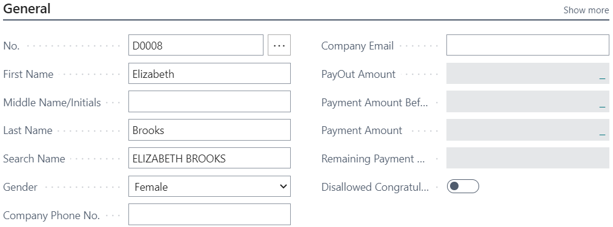
In the Address & Contact tab, enter the Address - Liberty street 10-28. Enter Post Code - LV-1001, and by entering this field, the fields City and Country will be filled in automatically. Move to the next tab.
In the Administration tab, enter Employment Date - 01.01.2021. Check if the Status is Active, it fills in automatically by default. And move to the next tab.
In the Personal tab, enter Birth Date - 04.02.1988. Enter Social Security No. - 040288-11009 (first part of this number will be created automatically from the field Birth Date). Enter Previous Social Security No. - 040288-11009. Check if Residence is Resident, if fills in automatically by default. Move to the next tab.
In the Payments tab, select from the list Employee Posting Group - STR. Enter IBAN - LV77HABA0551002016716. Select from the list SWIFT Code - HABALV22. And move to the next tab.
In the Payroll tab, select from the list Social Status Code - DN. And move back to the list of Employees to create the next employee card.
In the General tab, enter First Name - James. Enter Last Name - Smith. Select a Gender from the gender list. In the Address & Contact tab, enter the Address - Oak street 25. Enter Post Code - LV-1057. And move to the next tabs.
In the Administration tab, enter Employment Date - 15.01.2021. Check if the Status is Active. In the Personal tab, enter Birth Date - 24.06.1978. Enter Social Security No.- 240678-12034. Enter Previous Social Security No. - 240678-12034. Check if Residence is Resident. In the Payments tab, select from the list Employee Posting Group - ADMIN. Enter IBAN - LV77HABA0551002016716. Select from the list SWIFT Code - HABALV22. In the Payroll tab, select from the list Social Status Code - DN.
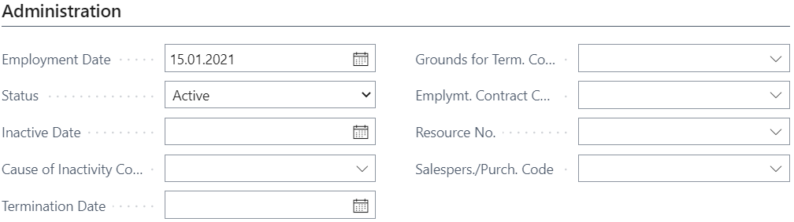
In order to assign to employees the positions and payroll components, departments and position need to be registered. Let's start with departments. In the role center's navigation bar, press Departments.
Press New to create a list of departments.
Enter the following departments - 00-00 Administration, 01-00 Financial department and 02-00 Sales. Make sure that the Date Created for all department lines are 01.01.2021.
Let's create also the positions. In the role center's actions pane, tap on Administration and choose Positions.

Press New (1) - +New (2) to enter a new position card.
Enter Description - Sales Manager. Choose from the list Profession Code - 2431 05. Choose from the list Department Code - 02-00. Enter Total Loading - 1,00. Enter the Date Created - 01.01.2021. Then go back to the list of positions to enter the next position card.
Enter Description - Chief Accountant. Choose from the list Profession Code - 1211 04. Choose from the list Department Code - 01-00. Enter Total Loading -1,00. Enter the Date Created - 01.01.2021.
Go back to the list Employees and tap on the Elizabeth's employee card No. to open the card.
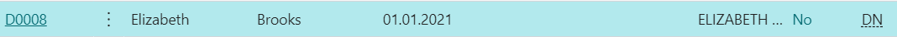
In order to assign a position, press on the buttons Related (1) - Creating Add. Info (2) and Create new employee position (3). A new Employee position card will open.
Enter Position Code (4) for Chief Accountant that was created earlier. Select Salary Type (5) from the list - SDL (Aggregated Working Time). Enter Loading (6) - 1,00. Choose 5 DD calendar in the field Calendar Code (7). And go back to the employee card.
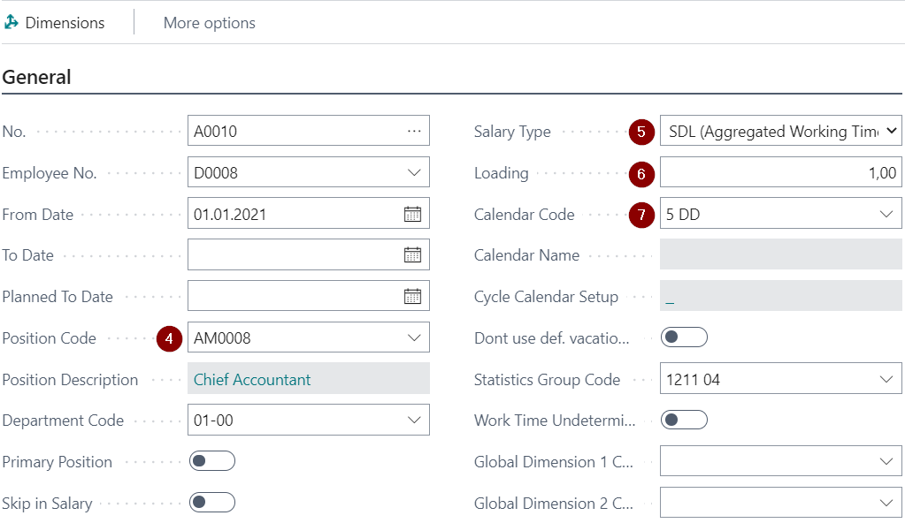
Now the tab Employee Position is filled with the new position.
Now go to the James Smith's employee card and press on the buttons Related - Creating Add. Info and Create new employee position to open the Employee position card. Enter Position Code (1) for Sales Manager. Select Salary Type (2) from the list - NDL (Normal Work Week). Enter Loading (3) - 1,00. Choose 5DD calendar in the field Calendar Code (4).
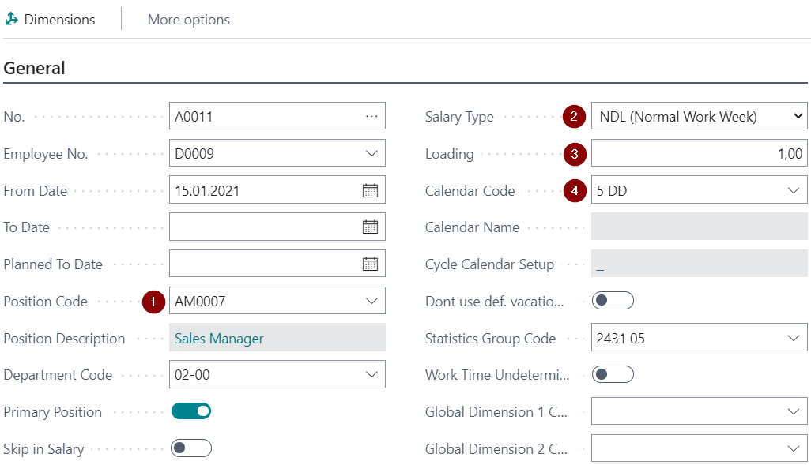
And go back to the employee card, where you will see the entered position.
Now let's assign the salary components to the employees. Open Elizabeth Brook's employee card and press on the buttons Related (1) - Creating Add. Info (2) and Create Employee Payroll Components (3).
Press Ok.
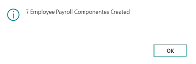
Tap on the buttons Process (1) and Employee Payroll Components (2). Employee Payroll Component List will open.
Make the following adjustments: change the Code 101 to 109 (3). Enter From Date - 01.01.2021 and enter the salary Amount (4) - 1000,00. Additionally enter the From Date - 01.01.2021 and Amount (6) - 200,00 to component No. 737 (5).
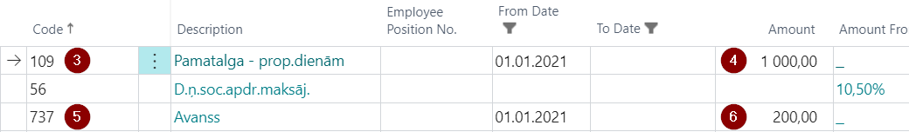
Go to James Smith's employee card and assign the payroll components as well. Here Code 101 must remain, please enter only From Date - 15.01.2021 and Amount - 1500,00. Additionally, the From Date - 15.01.2021 and Amount - 200,00 to the component No. 737.
Both employees also have submitted Salary Book. This should be registered in each employee's card. Press the buttons Related (1) - Additional Info. For Payroll (2) and Related Information (3).
For Elizabeth Brooks, enter From Date - 01.01.2021.
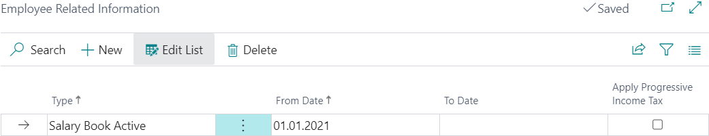
For James Smith, enter From Date - 15.01.2021.
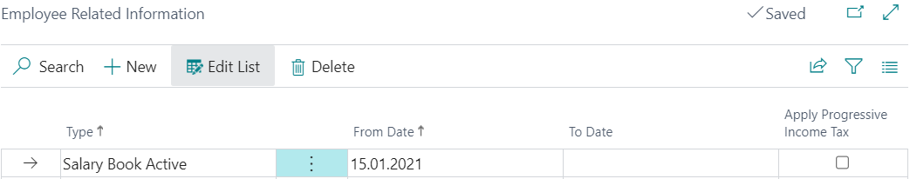
Walkthrough: Payroll process for the first month
About this walkthrough: This walkthrough demonstrates how to register absences, grant bonuses and deductions to employees, and how to calculate and pay salaries at the end of the month.
Roles: use LV Payroll
Story: You are Elizabeth Brooks, a chief accountant of the sales company. Your responsibilities also include payroll. Your task is to register a sick leave, grant the bonuses and register a deduction due to received writ of execution. At the end of the month, perform payroll calculation, payout and posting for the Employees No. D0001 and No. D0002.
Pre-requisites: In the Company Information setup must be entered data in the following fields:
- Name - Cronos,
- Country/Region Code - LV,
- Registration No. - 40004040004,
- VAT Registration No. LV40004040004
In the Bank Accounts list, enter the data in the bank account card B010 what will be used for payroll:
- SWIFT code - HABALV22
- IBAN LV01HABA0001001012210 to the bank account card, what is used for payroll.
Steps:
Employee James Smith has submitted a sick list. To register it, click on Employee Absence in the role center's Actions bar.

A new Absence card will open. In the tab General, select the correct Employee No. for James Smith. Select Cause of Absence Code - SLIMS_A. Enter From Date - 20.01.2021, and enter To Date 26.01.2021. In the tab Payroll, check that the Calculate in Year is 2021 and Calculate in Month - January, the calculation date is included automatically by system according to the last made salary calculation. And close the Absence card.
Both employees should be granted a bonus to the January salary. And for James Smith a one-time deduction due to received writ of execution must be registered. In order to perform this, click on Component Register in the role center's navigation bar.
A new Component register card will open. Enter a calculation period, Year (1) - 2021 and Month (2) - January, and type a Description (3) - Bonus and deduction. When it is done, press on the buttons Lines (4) and Create Lines (5).
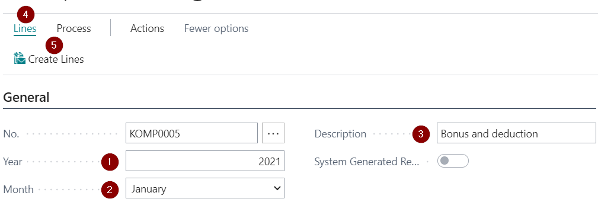
Component generation tab will open. Select from the list Component Code (6) - 107 and enter the Amount (7) - 200,00. Set the filter in the field No. (8) for employees Elizabeth Brooks and James Smith, and click Ok.
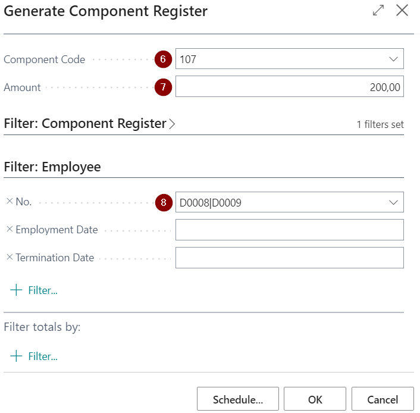
Generated lines with bonuses will appear in the tab Component Register ListPart.
Now it is time to add the deduction as well. In the next blank line, select Employee No. for James Smith. Choose from the list Payroll Component Code - 751 (1) and enter Amount - 100,00 (2). The task is done, you can close the Component Register.
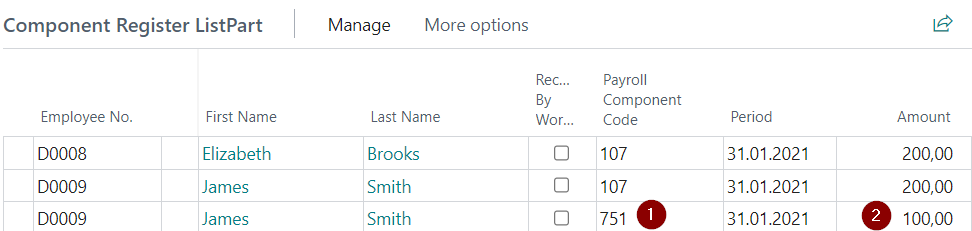
Now let's calculate the salaries. Click on Salary List in the role center's Actions bar.
Payroll header will open. Enter a calculation Year 2021 and Month January, and type Description (1) - Salary 01.2021. Type Payment Information (2) - Salary 01.2021. Click the buttons Process (3) and Insert New Lines (4).
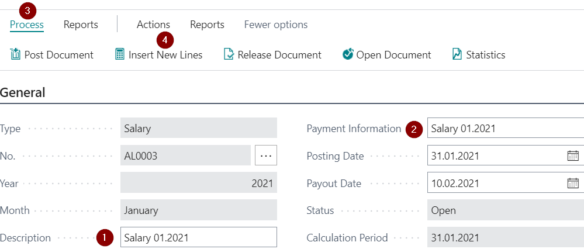
Payroll Line generation window will pop out. Set the filter for the needed employees in the field No. and press OK.
Salary calculation lines will appear at the tab Lines. Change the status to Released by pressing the buttons Process (1) - Release Document (2).
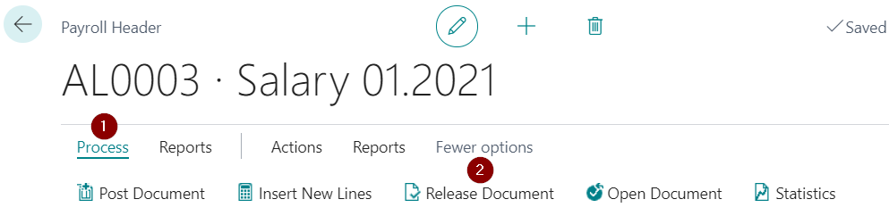
To prepare the payments, press Report (3) and Export to Payment Journal (4).
Payment journal generation window will appear. Choose from the list Gen.Journal Batch - PAYROLL. Enter the Posting Date - 10.02.2021.
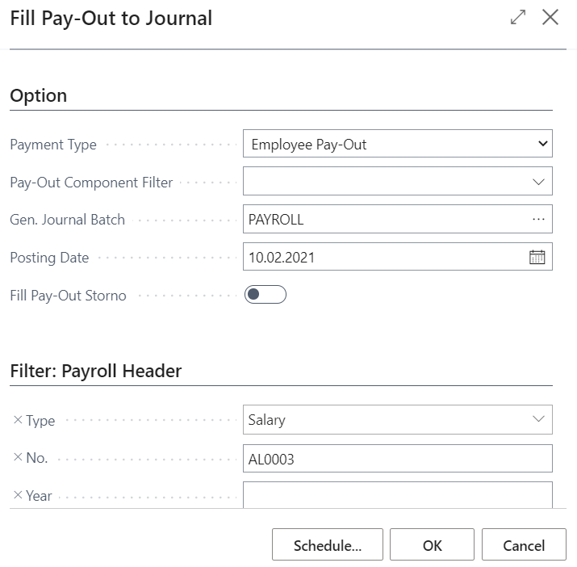
Click OK to confirm that the generation process is done.
Payment Journal will open. Select both lines (3) and press the buttons Bank (1) and Export Payroll Payment (2).
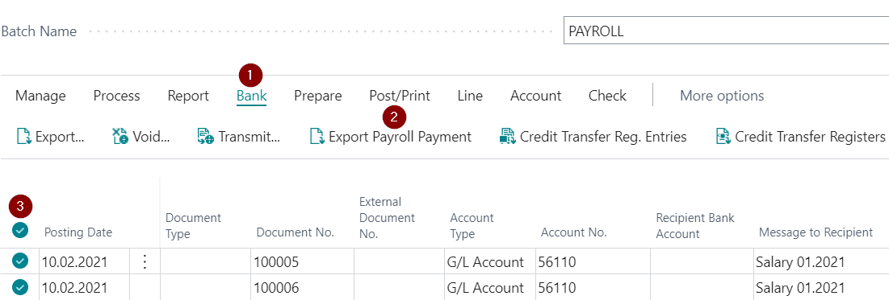
Click OK to confirm the file preparation process is done. The file now is saved in your downloads and is available for upload to bank systems.
Tap on the buttons Post/Print (1) and Payroll Paym. Group. Posting (2) to post the payment journal to General Ledger.
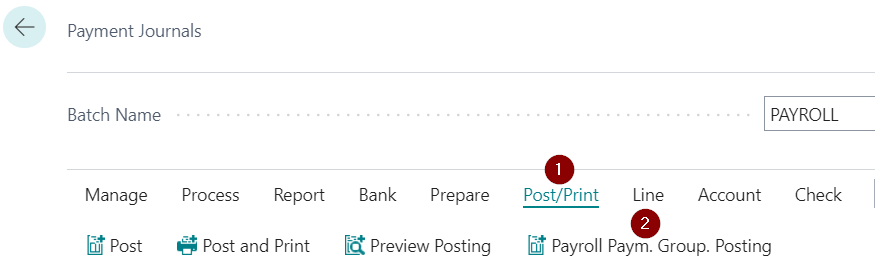
Click OK to confirm that the process of posting is done. Close the payment journal window.
To post also the salary list, click on Process (1) and Post Document (2).
Confirm with OK to proceed with posting.
Will pop out all the posting lines before saving. Press OK.
Confirm with OK that the posting process is done.
Walkthrough: Payroll process for the second month
About this walkthrough: This walkthrough demonstrates how to perform advance payments and prepayments, how to terminate the employee, and how to use Hour register.
Roles: use LV Payroll
Story: You are Elizabeth Brooks, a chief accountant of the sales company. Your responsibilities also include payroll. Your task is to pay salary advances, pay vacation pays before the vacation, get deal with final calculation till 25.02.2021. and payout to employee James Smith. And at the end of the month, perform payroll calculation, payout and posting.
Pre-requisites: In the Company Information setup must be entered data in the fields Name, Registration No., VAT Registration No. In Bank Accounts setup, enter the SWIFT code and IBAN to the bank account card, what is used for payroll.
Steps:
Employees Elizabeth Brooks and James Smith have applied for a salary advance payment. To prepare them, click on Advance List in the role center's Actions bar.
Payroll header for advance payment will open. Type Description (1) - Salary advance payment 02.2021, type Payment Information (2) - Salary advance payment 02.2021. Click the buttons Process (3) and Insert New Lines (4).
Payroll line generation window will pop out. Set the filter for both employees in the field No. Click OK.
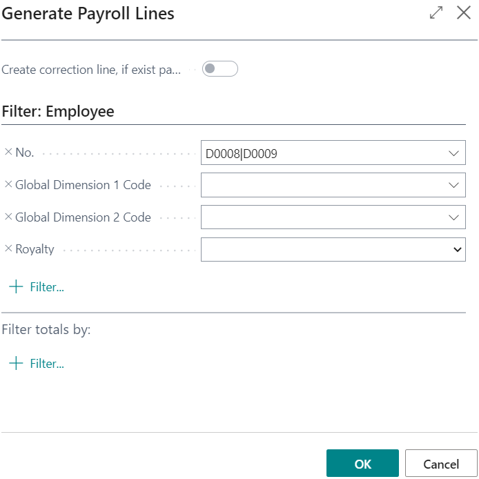
Lines with salary advances appear now in the tab Lines (1). To prepare the payments, press Reports (2) and Export to Payment Journal (3).
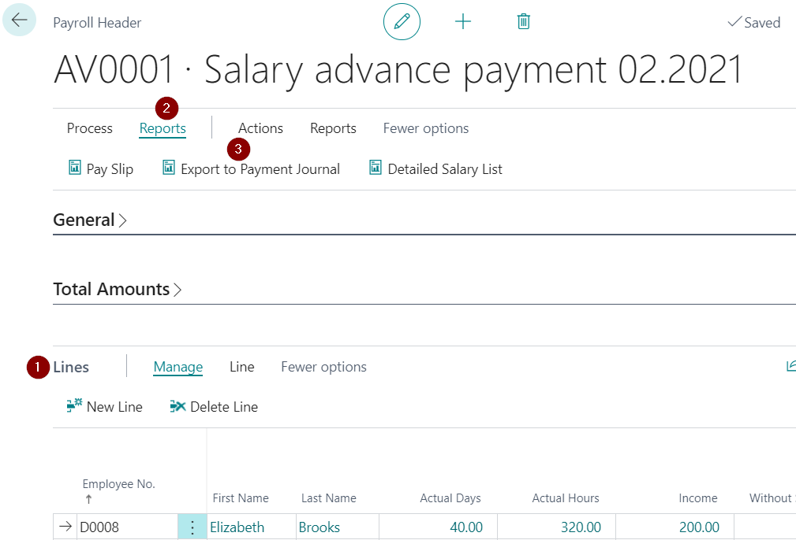
Payment journal generation window will appear. Choose from the list Gen.Journal Batch - PAYROLL. Enter the Posting Date - 15.02.2021, and click OK.
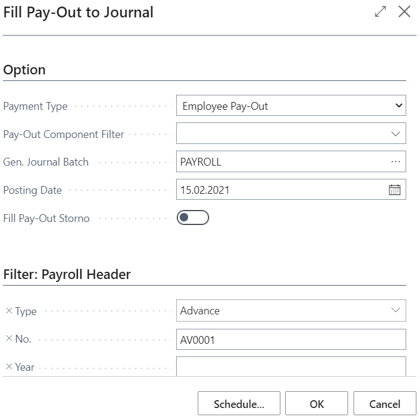
Click OK to confirm that the generation process is done.
Payment Journal will open. Select both lines (3) and press the buttons Bank (1) and Export Payroll Payment (2). Click OK to confirm that the file preparation process is done. The file is now saved in your downloads and is available for upload to bank systems.
Tap on the buttons Post/Print (4) and Payroll Paym. Group. Posting (5) to post the payment journal to General Ledger.
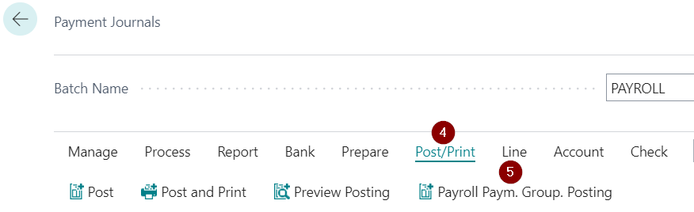
Click OK to confirm that the process of posting is done. By this, the advances payout process is done, because Advance lists do not need to be posted.
Employee Elizabeth Brooks has applied for vacation and wants to receive a vacation pay before the vacation begins. Let's start with the registration of the absence by clicking on Employee Absence.
Employee absence card will open. Select the Employee No. for Elizabeth Brooks. Choose the Cause of Absence Code - ATVAL. Enter the From Date - 16.02.2021, and To Date - 18.02.2021. Close the Employee Absence card.
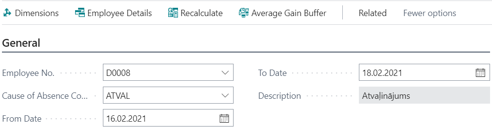
Now let's proceed with the vacation's pay. Click on Prepayment List in the role center's Actions bar.
Payroll Header will open. Type Description (1) - Vacation pay 02.2021. Type Payments Information (2) - Vacation pay 02.2021. To specify the required absence, in the tab Filters, select the Absence Code Filter (3) - ATVAL. Enter the Absence Start Period Filter (4) 16.02.21..28.02.21. In order to generate the line, press the buttons Process (5) and Insert New Lines (6).
Payroll line generation window will pop out. Set the filter for the employee in the field No. Click OK
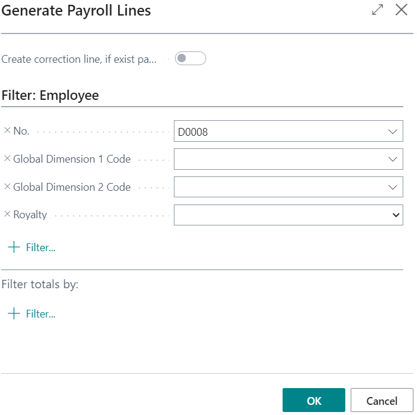
Prepayment line will appear at the tab Lines. Fix the calculation by closing the Salary list, press the buttons Process (1) and Release Document (2). The Status will change to Released.
To prepare a payment, press Report (1) and Export to Payment Journal (2). Payment journal generation window will appear. Choose from a list Gen.Journal Batch - PAYROLL. Enter the Posting Date - 15.02.2021, and click OK.
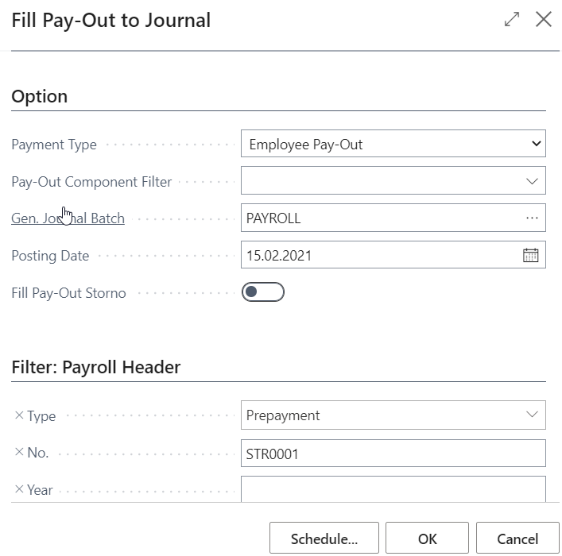
Click OK to confirm that the generation process is done.
Payment Journal will open. Select the line and press the buttons Bank (1) and Export Payroll Payment (2). Click OK to confirm that the file preparation process is done. The file is now saved in your downloads and is available for upload to bank systems.
Tap on the buttons Post/Print (3) and Payroll Paym. Group. Posting (4) to post the payment journal to General Ledger. Click OK to confirm that the process of posting is done.
Information that the employee James Smith wants to terminate the contract has been received. The last working day is 25.02.2021. In order to perform the termination, open the list of Employees and tap on the required employee.
In the tab Administration, enter the Termination Date (1) - 25.02.2021.
System will ask for confirmation. Press Yes.
After the confirmation of the termination, the system will automatically close the position card with the same Termination date 25.02.2021, and...
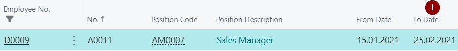
... the same will be done with the Employee Payroll Components List.
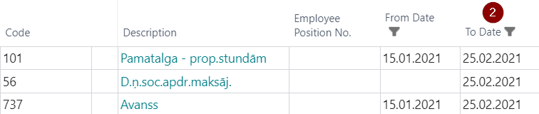
Now the final calculation can be prepared. Click on Salary List in the role center's Actions bar.
Payroll header will open. Type Description - Final Calculation 02.2021. Type Payment Information - Final Calculation 02.2021. Enter the Posting Date - 25.02.2021. Enter the Payout Date 25.02.2021.
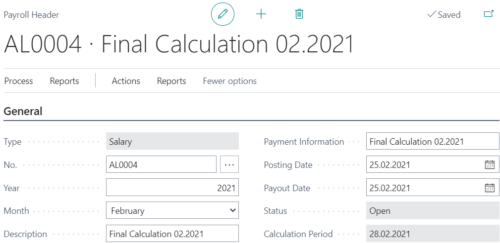
Click the buttons Process (1) and Insert New Lines (2). Payroll Line generation window will pop out. Choose from the list the No. for the employee for which the final calcualtion needs to be done and press OK.
Salary calculation lines will appear in the tab Lines. System will automatically include also the unused vacation days in the calculated Income amount.
Change the status for salary list by pressing the buttons Process (1) and Release Document (2) The Status will be changed to Released.
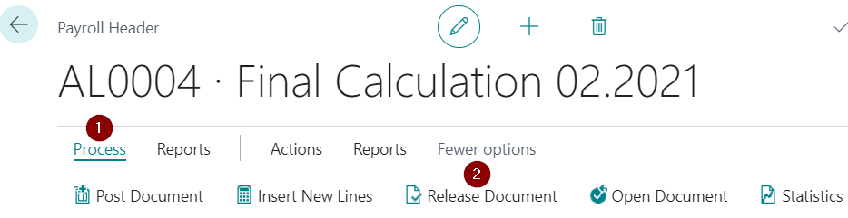
To prepare a payment, press Reports (1) and Export to Payment Journal (2). Payment journal generation window will appear. Choose from the list Gen.Journal Batch - PAYROLL (3). Enter the Posting Date - 25.02.2021 (4), and click OK.
Click OK to accept that the generation process is done.
Payment Journal will open. Select the line and press the buttons Bank (1) and Export Payroll Payment (2). When a new notification opens, click OK to confirm that the file preparation process is done. The file is now saved in your downloads and is available for upload to bank systems.

Tap on the buttons Post/Print (3) and Payroll Paym. Group. Posting (4) to post the payment journal. Click OK when a notification appears to accept that the process of posting is done.
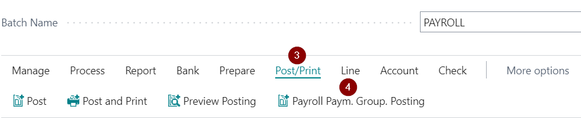
In order to post a salary list, click on Process (1) and Post Document (2). Confirm with YES to proceed with posting.
All the posting lines will pop out before saving.
Accept with OK that the posting process is done.
To complete the process of termination, move back to the Employee card's tab Administration and change the Status from Active to Terminated.
Employee Elizabeth Brooks has worked overtime in February. Extra hours can be registered in the Hour Register. To reach the Hour register, click on Hour Registers in the role center's Navigation bar.
Press New, to create a new hour register's entry.
A new line will open for the entries in the Hour Register. Select the appropriate Employee No. for Elizabeth Brooks. Then Select the Year - 2021. Select the Month - February. Enter the Night Hours - 2,00. Enter the Overtime - 5,00. Close the Hour register.
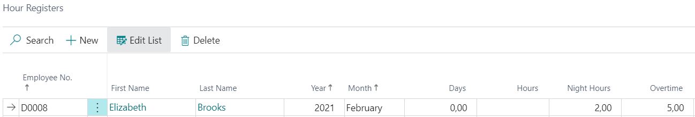
The writ of execution was received for a deduction from Elizabeth Brooks. Tap on Component Register in the role center's Action bar.
A new component register card will open. Type Description (1) - Writ of Execution. In the tab Component Register ListPart, select Employee No. (2) for Elizabeth Brooks, choose Payroll Component Code (3) - 751. Enter the Amount (4) - 50,00. And close the card.
All the Payroll data for February is entered and it can be proceeded with salary calculation. Click on Salary List in the role center's Action bar.
Payroll header will open. Type Description (1) - Salary 02.2021. Type Payment Information (2) - Salary 02.2021. In the tab Lines, enter Employee No. (3). Click the buttons Process (4) and Release Document (5), status of the Salary list will switch to Released.
To prepare the payments, press Report (1) and Export to Payment Journal (2).
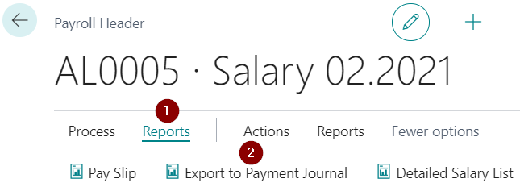
Payment journal generation window will appear. Choose from the list Gen.Journal Batch (3) - PAYROLL. Enter the Posting Date (4) - 28.02.2021. And click OK.
Click OK to confirm that the generation process is done.
Payment Journal will open. Select both lines and press the buttons Bank (1) and Export Payroll Payment (2). Click OK to confirm that the file preparation process is done. The file is now saved in your downloads and is available for upload to bank systems.
Tap on the buttons Post/Print (1) and Payroll Paym. Group. Posting (2) to post the payment journal to General Ledger. Click OK to confirm that the process of posting is done.
To post the salary list as well, click on Process (1) and Post Document (2). Confirm with Yes to proceed with posting.
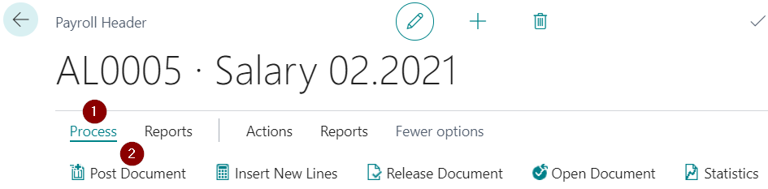
The posting lines will pop out before saving. Press OK.